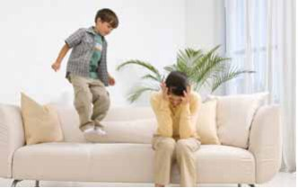
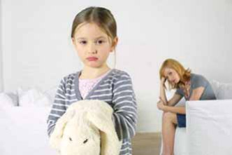
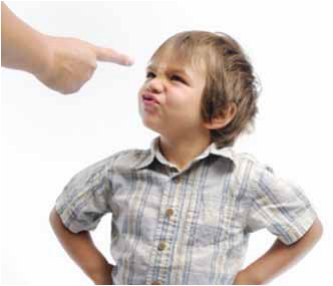
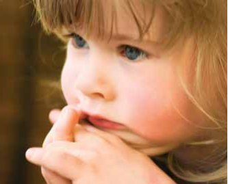
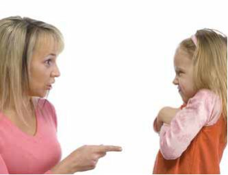
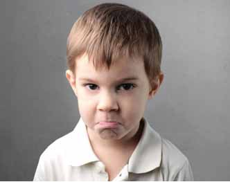

Своя справа · журнал «ДентАрт» 2014 №4 (77)
Суб'єктивно «важкі» діти у практиці стоматолога
SUBJECTIVELY «DIFFICULT» CHILDREN IN DENTAL PRACTICE
Закінчення. Початок читайте в ДентАрті №2/2014
Агресивна дитина
Агресія у дітей може виявлятися в різних формах: або у вигляді захисної реакції при очікуванні неприємностей чи ситуації, що становить загрозу безпеці і благополуччю; або у вигляді стійкої характеристики особистості — патологічної агресивності.
У формі реакції агресія швидкоплинна, виникає періодично і в поясненних випадках. Патологічна агресивність зумовлена психічними порушеннями і зазвичай не мотивована.
Патологічна агресивність розпізнається за специфічними проявами, які мають місце в різних сферах.
Інтелектуальна сфера: середні і низькі показники інтелекту, можливо, легка дебільність.
Комунікативна сфера: демонстрація ворожості, схильність до садизму, провокація конфліктів.
Емоційна сфера: швидка зміна настрою, підвищена збудливість, грубість, упертість, запальність.
Вольова сфера: неорганізованість, непослух, відсутність самоконтролю, нестійкість до афекту, злостивість.
Дії лікаря
Спілкування з агресивною дитиною не становить особливих складнощів для стоматолога, який має психологічну підготовку. У разі агресивної реакції досить виявити терпіння, заспокоїти дитину і спрямувати на неї потік позитивної психоенергетики.
Якщо є підстава припускати патологічну агресивність (висновки про це можна зробити з урахуванням інформації від батьків), то крім зазначених заходів впливу, добре б забезпечити дитині можливість емоційної розрядки. Їй слід допомогти «випустити» нагромаджену агресію: стримувати її вона не в силах, а щоб самостійно опанувати себе, їй потрібно багато часу. Ось деякі прийоми, що сприяють розрядці агресії:
- дайте в руки якусь іграшку, щоб дитина могла «зігнати зло», маніпулюючи нею (нехай трясе, смикає, кидає на підлогу);
- вручіть старий журнал, буклет, газету — хай рве, розмахує, кидає;
- навмисне голосно запитайте про що-небудь, щоб реакція дитини у відповідь зажадала витрати її зусиль. Наприклад: «Як твої справи сьогодні?», «Чим ти їхав сьогодні в клініку?», «Чи багато людей було у трамваї (тролейбусі, метро)?», «Що тобі не подобається у нас?»;
- перемикайте увагу дитини, перебільшуючи при цьому свої почуття: «Ой, дивися, що відбувається на вулиці!», «Ну ти поглянь, у нас, здається, вода закінчилася», «А куди поділося моє дзеркальце?».
У жодному разі не відповідайте агресією на агресію, не погрожуйте дитині покаранням або припиненням лікування, не застосовуйте силу, щоб зафіксувати її в кріслі, інакше ви спровокуєте ще потужнішу агресивну розрядку.
Усе, що ви говорите навмисне голосно або перебільшено емоційно, має бути спрямоване не на дитину, а на інших учасників взаємодії або на предмети.

Гіперактивна дитина
Якщо це малюк до трьох років, то заспокоїти його допомагають приємні тактильні відчуття, погладжування, масаж. Паралельно лікар посилає дитині позитивну психоенергетику і вимовляє ласкаві слова. Після цього малюкові можна дати в руки м'яку гумову іграшку — нехай тримає (звичайно, попередньо її треба продезінфікувати розчином або спреєм).
Зустрічаються діти, у яких гіперактивність поєднується з дефіцитом уваги. Дитина не здатна зосередитися на виконуваному завданні, постійно відволікається, їй важко всидіти на місці, виявити терпіння, коли її просять про це.
Дії лікаря
Взаємодія з дитиною, старшою 3-4 років, має дві мети: керувати її увагою і сприяти «виплеску» енергії.
- Надайте дитині можливість трохи попустувати: нехай 1-1,5 хвилини покрутиться в кабінеті, посовається в кріслі, покрутить головою.
- При цьому постарайтеся керувати її активністю: проведіть рукою перед її очима і спрямуйте руку на який-небудь предмет (прикрісловий столик, монітор); дайте потримати якийсь предмет, але не відразу, то підводячи його ближче, то відсуваючи, немовби граючись.
- Зрозумівши, що дитина підкоряється вашим маніпуляціям, підкріплюйте свої дії словами:
«Дивися сюди. Що ти бачиш? Це столик, а це телевізор».
«Що я тобі даю в руки? Це дзеркальце, подивися в нього. А це буклетик, погортай його». - Ваші дії і слова вводять дитину в легкий гіпнотичний транс, при цьому вона активно витрачає енергію, що переповнює її.
- Тепер можна подавати дитині команди, перемежовуючи їх заохоченнями:
«Поверни голівку до мене. Молодець! Відкрий ротик і покажи мені зубки. Дуже добре! Зараз я їх почищу, а ти допомагай мені. Який ти хороший хлопчик!».
Дитина в депресії
Основна причина депресії — знижений нервовий тонус, тому рухи уповільнені, емоції погано «підживлюють» реакції на зовнішні впливи, увага несконцентрована, мислення не зосереджене на тому, що відбувається, низька контактність. Треба активізувати дитину, щоб домогтися від неї адекватної активної поведінки у процесі лікування.
Дії лікаря
- Говоріть чітко, досить голосно, але м'яко.
- Якщо ви хочете, щоб дитина розуміла ваші слова і команди, передусім зафіксуйте своїми очима її погляд. Таким способом ви допомагаєте їй зосередитися на ваших словах.
- Повторюйте свої прохання та команди, доки дитина усвідомить, що і як треба робити, що вона повинна зрозуміти.
- Домагайтеся потрібної реакції, похваліть дитину:
«Молодець, ти мене зрозумів», «Хороший, слухняний хлопчик».

Дитина-маніпулятор
Поведінка дітей-маніпуляторів дуже схожа з поведінкою тих, хто переживає затримки в розвитку навичок, адаптації та самоконтролю (див. далі). Дитина уперта, наполягає на своєму, скандалить. Однак відмінності між маніпуляторами і дезадаптацією істотні, як і способи впливу.
Затримки адаптаційного розвитку зумовлені внутрішніми обставинами — «відстає психіка». Маніпуляторство зумовлене зовнішніми факторами — неправильне виховання в сім'ї (батьки балували, потурали, мати і батько висували різні вимоги тощо). Дитина вередує, наполягає на своєму, командує дорослими, тим самим домагаючись від них виконання своїх бажань. Під впливом зовнішніх факторів у неї сформувався умовний рефлекс: «коли вередує — отримує нагороду». У цьому винні вихователі: потураючи дитині, вони сформували цей умовний зв'язок.
Вплив на дитину-маніпулятора:
- перемикання уваги;
- прояв терпіння;
- ігнорування примх. Дитині треба дати зрозуміти: її погана поведінка не заохочується;
- домовленість про гарну поведінку: «Треба зробити», «Треба потерпіти»;
- заохочення за гарну поведінку не до, а після того, як дитина виконає ваше прохання.
Маніпуляторство може виявлятися у відносно прийнятних формах. Дитина «керує» дорослим, вдаючись до хитрощів і викрутасів.
Дитячі стоматологи час від часу мають справу з дітьми-маніпуляторами і не завжди в потрібний момент розпізнають їх, щоб знайти вихід із ситуації.
На заняттях з психологом лікар розповідає:
«Одного разу у мене була дуже рухлива, балакуча дівчинка шести років. Я захопилася спілкуванням з нею, щоб прихилити до себе. Однак через кілька хвилин дівчинка втомилася від розмов і випурхнула з крісла. У чому моя помилка? Адже я правильно робила, підтримуючи ініціативне спілкування з дівчинкою».
Коментар. Звичайно, треба було вступити в діалог з пацієнткою, оскільки так здійснюється підлаштовування до базової потреби дітей у шестирічному віці — вони хочуть викликати інтерес до своєї особистості. Однак слід бути завжди напоготові, щоб вчасно зрозуміти: маленький хитрун або хитруля «умовляє» вас з метою відтягнути початок лікування або зовсім уникнути його. Обмінявшись інформацією з ініціативи дитини, треба спритно перевести тему розмови на лікування.
Дії лікаря
Скажіть комплімент співрозмовникові. Це можна зробити у будь-якому відповідному місці діалогу і в будь-якому формулюванні:
- «Я бачу, ти розумна дівчинка»
- «З тобою дуже цікаво розмовляти»
- «Ти дуже спостережлива дитина»
- «Ти добре міркуєш» і т.п.
Здійснивши такий непомітний перехід від розмови, затіяної ініціативною дитиною, до теми по суті справи, ви немовби «підставили підніжку».
Комплімент — це «підніжка»; комплімент завжди приємний, тому не викликає відторгнення.
Після «компліменту-підніжки» переведіть розмову на потрібну вам тему, наприклад, за допомогою питання: «Чи будеш ти допомагати мені, коли я почну лікування?»
Перехід до основної теми можна здійснити через пропозицію: «Ось я тобі розповім, що ми будемо зараз робити». Після цього ви реалізуєте методику «розкажи, покажи, зроби».

Демонстративна дитина
Прагнення привернути до себе увагу оточення — природна форма поведінки індивіда, яка поступово ускладнюється. У віці від народження і приблизно до півтора року дитина «демонструє» себе, різними засобами привертає увагу оточуючих (плаче, кидає щось на підлогу і т.п.), щоб забезпечити задоволення своїх життєво важливих потреб. Дорослішаючи, дитина поводиться демонстративно, щоб отримати схвалення за свою поведінку і навіть за факт своєї присутності «тут і зараз»: «ось він я», «пам'ятайте про мене».
У 4-5 років демонстративність зумовлена бажанням отримати гарну оцінку з боку близьких людей, однолітків і сторонніх. Рідні заохочують прагнення дітей бути поміченими, виділятися серед інших дітлахів. Батьки наряджають доньок і синів, розучують з ними віршики та пісні, щоб вони могли показати себе.
У 6-8 років демонстрація свого «Я» стає засобом завоювання позиції серед однолітків, умовою самоідентифікації, тобто самооцінки себе і своїх можливостей на тлі інших (передусім однолітків). Чим старшою стає особистість, тим виразніше виступає її потреба бути значущою, отримати адресну (індивідуалізовану) увагу з боку інших.
Однак за несприятливих обставин (дефекти сімейного виховання, невдале проходження критичних вікових періодів розвитку) природне прагнення людини демонструвати себе набуває утрируваних форм. Бути поміченим, отримати на свою адресу особливу увагу стає нав'язливою потребою, яка свідчить про комплекс неповноцінності особистості: вона почувається комфортно лише тоді, коли нею захоплюються, звеличують її. Демонстративність досягає рівня нарцисичної патології, яка виявляється в різних сферах особистості.
Інтелектуальна сфера: неувага до позицій інших, нав'язування своїх думок і оцінок оточенню.
Комунікативна сфера: егоцентризм, прагнення до лідерства, не формуються прихильності.
Емоційна сфера: поглиненість фантазією успіху, почуття власної унікальності, вимога захоплення, холодність до матері.
Вольова сфера: непереносність критики; у відповідь на критику лють або зарозумілість; нестерпна байдужість оточення.
Дії персоналу
Встановлення контактів з дітьми приблизно до 5-ти років відбувається за допомогою компліментарних формул:
- формули «захоплення»: «Який гарненький хлопчик!», «Яка красива дівчинка!», «Яка у тебе ошатна сукенка!», «Хто тобі купив таку красиву кофтинку?» і т. п.;
- формули «радості спілкування»: «Яка я рада, коли ти до мене приходиш лікуватися!», «З тобою дуже приємно спілкуватися!»;
- формули «заохочення»: «Ти, звичайно, допоможеш мені вести лікування», «Ти розумниця і будеш лікуватися спокійно»;
- формули «визнання успіхів»: «Розкажи, що ти встигла розучити за минулий час (віршик, пісню, танець)?», «Як ти швидко ростеш!»

З дітьми віком 7-8 років компліментарний стиль спілкування розширюється за рахунок позитивних оцінок поведінки дитини в різних сферах: удома, з однолітками, в кабінеті, у школі. Найліпше для цього використовувати відомості від батьків: чемно поводиться в сім'ї, слухає маму і тата, добре вчиться, розуміє, що потрібно лікуватися, доглядати за зубами і яснами, і т. д.
10-12-річні діти хочуть почути позитивні оцінки своєї зовнішності, фігури, манери рухатися і спілкуватися. Підлітки, крім того, дуже чутливо ставляться до думок дорослих, що стосуються всіх засобів, за допомогою яких вони намагаються звернути на себе увагу. Яскрава і навіть виклична косметика, довгий манікюр, розпущене волосся, помітна біжутерія — у дівчат… Химерні стрижки, майки з претензійними девізами, значки на куртках і дивні захоплення — у юнаків. Майже кожен підліток використовує субкультурний сленг, демонструє домінуючу манеру розмови і має півнячий вигляд. Усі підлітки вважають поза критикою свої інтереси, звичні плани на життя.
Помічайте і позитивно оцінюйте будь-який вияв оригінальності підлітків, якщо хочете встановити контакти з ними.
За допомогою компліменту, захоплення, визнання успіхів і позитивних оцінок можна встановити міцні і тривалі контакти з демонстративною дитиною будь-якого віку. Не бійтеся перестаратися в «компліментарній тактиці» наведення мостів. Індивід, який дорослішає, гостро потребує зміцнення своєї самості. При цьому треба враховувати, що в багатьох сім'ях, на жаль, стало звичним руйнувати почуття власної гідності дітей. Іноді це відбувається мимоволі, але найчастіше батьки таким способом домагаються від дітей покори. Та як би там не було, будь-яке придушення особистості спонукає її поводитися демонстративно. Лікар може зробити з цього висновок, який допомагає встановлювати контакти з дітьми.
Чим чіткіше у поведінці дитини виражена демонстративність (включаючи ознаки нарцисичної патології), тим більше вона потребує досягнення внутрішнього психологічного комфорту з допомогою компліментів і підтримки з боку оточення.
Компліментарного стилю спілкування жадають всі люди і в будь-якому віці. Однак у взаємодії з деякими дорослими необхідно дотримуватися почуття міри: егоцентричні натури схильні зловживати «захватом інших». Вони вимагають постійного захоплення і визнання неіснуючих чеснот і досягнень. Нарцисизм стає засобом експлуатації знайомих, близьких і навіть сторонніх людей. Нарцисичний невроз (визначення Зигмунда Фрейда) — дуже стійка і практично непереборна якість особистості.
Депресивна дитина
Депресія може виявлятися у двох формах — тимчасового стану і стійкої якості особистості. Стан зазвичай виникає через те, що дитина погано почувається у день відвідин лікаря, не виспалася, важко витримала дорогу до клініки, засмутилася через негаразди в дитсадочку чи школі, була покарана батьками, не отримала обіцяного подарунка і т.д. і т.п.
Інакше кажучи, депресивний стан зумовлений конкретною причиною, концентрацією уваги людини на якійсь проблемі.
Депресія як властивість особистості викликається порушеннями обмінних біохімічних процесів. У таких випадках діагностується депресивний синдром, який виявляється в різних сферах особистості.
Інтелектуальна сфера: уповільнення темпу мислення, швидка виснаженість уваги, важко зосередитися на завданні, нерівномірність розвитку інтелекту (дитина добре мислить, але погано запам'ятовує, і навпаки).
Комунікативна сфера: низька контактність, односкладові відповіді на питання, замкнутість, уникнення контактів.
Емоційна сфера: апатичність, бідність і слабкість емоцій, переживання туги, печалі, суїцидні думки, почуття безвиході.
Вольова сфера: нестійкість до афектів, ідеї самозвинувачення, самознищення.
Дії персоналу
Діти у стані депресії мають потребу в ніжному, уважному, ненав'язливому ставленні. Тимчасово вони загальмовані, хочуть, щоб їх не турбували, не хвилювали, не дошкуляли розпитуваннями. Лікар і асистент говорять тихо, заспокійливими голосами, їхні рухи обережні, плавні.
У той же час слід спонукати дитину активно реагувати на прохання (відкрий рот, держи рот ширше, не хвилюйся, не напружуйся), осмислено сприймати поради з догляду за зубами і виконувати рекомендації стоматолога.
Щоб активізувати дитину в стані депресії, слід м'яко і в той же час наполегливо, іноді двічі-тричі, повторювати команди, прохання, поради, доки не стане зрозуміло, що інформацію засвоєно.
Якщо перед вами дитина, яка страждає депресивним синдромом, то крім запропонованих вище способів спілкування, треба подбати про таке:
- ні словами, ні мімікою не можна виявляти невдоволення поведінкою дитини на прийомі (не тримає рот відкритим, не чує команди лікаря і т.п.);
- не можна поспішати і тим самим створювати дитині дискомфорт;
- не можна нав'язувати спілкування (розпитувати про справи, товаришів у дитячому садочку чи школі, про батьків і т.п.);
- не слід у присутності дитини дорікати в чому-небудь батькам (запізнилися на прийом, забули виконати рекомендації лікаря і т.п.).
Виявлене персоналом невдоволення дитиною, котра страждає на депресивний синдром, а також невдоволення її батьками можуть спровокувати у неї напад самозвинувачення, породити відчуття безвиході, стати причиною порушення сну.

Невихована дитина
Найчастіше невихованість виявляється у спілкуванні з дорослими. Дитина поводиться грубо, зухвало, нахабно. Причин зазвичай дві: по-перше, вона копіює поведінку батьків, а по-друге, за допомогою грубощів долає страх перед невідомим або маскує боязнь. Розуміючи внутрішню картину переживань дитини, можна знайти правильний вихід із ситуації, хоча дуже хочеться поставити її на місце, сказати у відповідь щось різке або прочитати мораль.
Приклад. Пацієнтці 5 років. Лікар розпочинає лікування. На прохання посидіти смирно і відкрити рот дівчинка послала лікаря-жінку на три букви. Мама робить вигляд, що нічого не чує. Лікар сторопіла і стала соромити грубіянку: «Так говорити не можна. Ти живеш у такому культурному місті і так негарно висловлюєшся!». На наступному прийомі маленька хамка повторила своє. Закінчивши лікування, лікар звернулася до мами з докорами з приводу поганого виховання дитини.
Дії лікаря
- Читати мораль невихованій дитині у стресовій для неї ситуації не слід. Це спонукає активно захищатися, повторювати або посилювати форму неадекватної поведінки. Не забуваймо, що вона нав'язана прикладом дорослих і маскує психологічний дискомфорт.
- Слід спокійно домовлятися з дитиною, даючи їй шанс «бути кращою», і висловити впевненість у тому, що зауваження буде враховано:
«Я бачу, ти доросла і розумна дівчинка, і звичайно, будеш поводитися добре, як поводяться усі діти, коли лікуються». - Батьків слід спонукати відчути сором за погано виховану дитину, але зробити це треба опосередковано. Наприклад, після лікування мамі можна було сказати:
«Я розумію, як вам ніяково через те, що дівчинка матюкається».
Мама, напевно, оцінила б делікатність лікаря.

Скривджена дитина
Образа, як вважає американський психолог Еверет Шостром, — одна з емоцій, за допомогою яких ми здійснюємо контакт один з одним. Більшість із нас свідомо чи підсвідомо боїться бути скривдженим. Образа — захисна реакція, яка виникає в ранньому дитинстві. Образа може бути емоційно відреагована у формі плачу, агресії, погрози або фізичної «розправи» з кривдником. Образа може бути прощеною, тобто повністю відреагованою на рівні свідомості, частково відреагованою або невідреагованою і витісненою у підсвідомість. Тут вона криється в латентному стані і здатна при нагоді проявитися у протестній поведінці, яку важко пояснити ситуативними факторами.
Наприклад, мати привела малюка до стоматолога, бажаючи йому добра, і здається, він повинен це розуміти. Дитина, однак, грубіянить їй, агресивно ставиться до лікаря. Не виключено, що прихід до стоматолога — лише «спусковий гачок», який запускає несвідомий прояв колись витісненої образи.
Образа на матір — глибоке і суперечливе почуття: дитина потребує матері, шукає у неї захисту і в той же час щось не прощає їй. На підсвідомому рівні вона ображена тим, наприклад, що коли була зовсім маленькою, мати надовго залишала її саму в тривозі, мокрою або в сльозах, зло нашльопала… Коли дитина стала старшою, мати суворо карала за витівки, критикувала в присутності однолітків. Мати чимось завинила перед дитиною, точніше, вчинила з нею «погано» (за її розумінням). Образа пішла у підсвідомість і готова дати про себе знати, якщо мати про щось просить, на чомусь наполягає, щось радить.
У кабінеті стоматолога цілком може розігратися конфлікт свідомого і підсвідомого: дитина мстить матері за якусь давню образу, але сказати прямо, за що вона мстить, не може. Знаряддя помсти — негативна стоматологічна поведінка. Образа гризе, шукає виходу назовні.
Невисловлена образа стає петлею на шиї людини.
Еверет Шостром
Як нейтралізувати дитячу образу на стоматологічному прийомі?
Дитина може або виговорити її, або виплакати, або проявити в негативній поведінці.
Дайте дитині сказати все, що вона хоче. Нехай поплаче. Дозвольте їй покапризувати. Якщо при цьому ви терплячі, продукуєте позитивну психоенергетику і виказуєте співчуття, вона майже напевно заспокоїться.
Якщо ж ви виявите нетерпіння, жорсткість або байдужість, дитина спрямує на вас нервову розрядку і контакт стане недосяжним.
Своєю неправильною поведінкою стоматолог може спровокувати «пробудження» дитячої образи на батьків. Буває, лікар, бажаючи догодити особі супроводу, активно спілкується лише з нею, пояснює, що і як буде лікувати, узгоджує оплату та гарантії. Іноді лікар відводить батька чи матір убік і щось пояснює. У колись скривдженої дитини створюється враження, що все робиться для матері чи батька, які привели її в клініку, а про неї всі забули.
Важливо, щоб увага лікаря розподілялася між дитиною і особою супроводу.
Деякі стоматологи, обговорюючи описану нами ситуацію, вважають, що їм на допомогу повинен прийти асистент: поговорити з дитиною, щось показати їй, доки лікар спілкується з батьком. Думається, цей рецепт не допоможе у випадку спілкування зі скривдженою дитиною. Вона хоче бути у центрі загальної уваги.
Література
- Бойко В.В. Психология и менеджмент в стоматологии. Том VI «Врач, ребенок, родитель». СПб, 2013.
- Бойко В.В. Психология и менеджмент в стоматологии. Том VII «Сервис — детям». СПб, 2013.
- Леонович О.М., Ковальчук Н.В. Немедикаментозные методы управления поведением детей раннего возраста на стоматологическом приеме. Стоматология детского возраста и профилактика стоматологических заболеваний. Материалы VII научно-практической Конференции с международным участием. М.-СПб., 2011.
- Coriat J.H. Dental anxiety: fear of going to the dentist. Psychol. anal Rev., 1946, 33: 365-367.